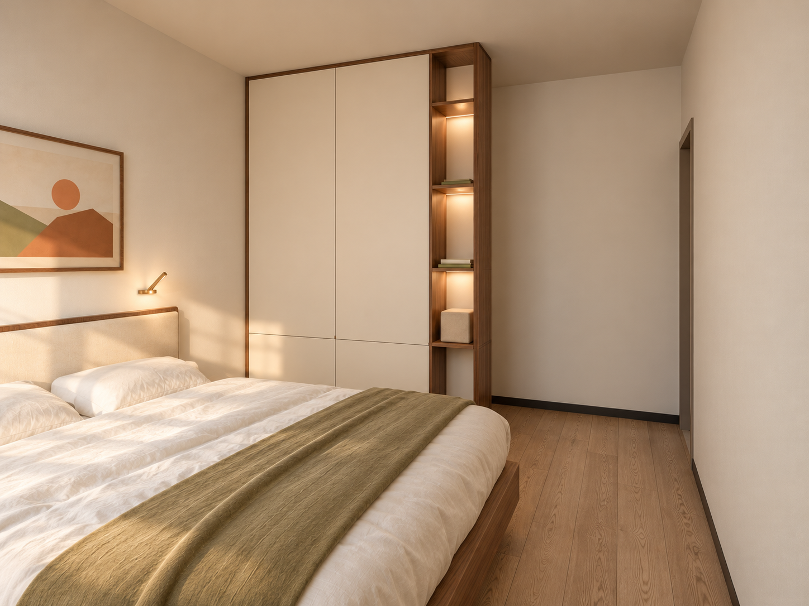

01 / DAILY LIFE
卧室安静，收纳各就各位。

遮住主卫视线，留出绕行路线。
保留1.80 × 2.00 m床垫和东向软包床头，床向北试移20 cm。南侧柜目标宽1.80、深0.28 m，实背板遮挡，端头留少量暖光展示格；取消南侧床头搁板。
公共走廊入口在西墙靠南，主卫在南侧偏东。图右只表现柜端短通道，不再虚构长走廊。柜体前后名义间距各约0.82 m，西侧绕行带约1.275 m；门扇、入口凹口和真实操作净空未复尺，均非施工尺寸。
进入新版主卧概念漫游 ↗
衣物按使用频率收，家务用品有专位。
东侧依次为镜面封闭柜、长衣、开放次净衣位与下部抽屉、双层挂衣。西侧从入口退让后开始，依次为家务柜、布草和叠衣区。顶部封闭收换季被褥，常穿衣物放舒适可及高度。
家务柜外宽0.60 m，仅试排杆式吸尘器与折叠熨衣板，须核实真机尺寸和柜内净空。固定镜配镜前照明，门板承重、电源、灯光方向与开门状态待核，南窗保持可操作。
进入衣帽间概念漫游 ↗02 / SPACE & MOVEMENT
先分清两扇门，再确定柜体。
床框至柜、柜至假定卫浴边界各约0.82 m，西侧绕行带约1.275 m，床尾至西墙约0.935 m。这些是模型名义间距，未扣除真实门扇、柜门开启、安装误差和南段凹口影响。柜高2.75 m仅作模型假设，须量完成面净高。
双侧柜总外深各目标0.60 m，关闭时条件净距1.27 m。开门、抽屉与人员站位须另算；原尺寸图仅供衣帽间和旧主卧历史对照，不作为新版遮挡柜放样图。
| 模型尺寸核算 | 算式 / 结果 | 用途与限制 |
|---|---|---|
| 床架总外尺寸 | 2.12 × 1.88 m | 按1.80 × 2.00 m床垫试排，需厂家提供含床头总尺寸。 |
| 遮挡柜总外尺寸 | 1.80 × 0.28 m | 浅收纳，不作挂衣柜；柜高2.75 m为假设。 |
| 床框南沿至柜前 | 3.80 − 2.98 = 0.82 m | 偏紧的名义间距，未扣床品外垂或柜门开启；南侧搁板已取消。 |
| 柜后至假定卫浴边界 | 4.90 − 4.08 = 0.82 m | 4.90 m是旧模型边界，不是已复尺的完整南段轮廓。 |
| 柜西端绕行带 | 3.075 − 1.80 = 1.275 m | 局部横向留宽，不代表连续通道或房门净宽。 |
| 床尾至西墙 | 3.075 − 2.120 − 0.020 = 0.935 m | 实际床架、踢脚与施工误差还要扣除。 |
模型能容纳这些家具包络，但0.82 m并不宽裕。柜门五金尚未定，不能在这条通路上直接加平开大门或外拉抽屉；若做可开启储物，优先由厂家核实不外凸的移门及轨道所占深度，必要时缩柜或调整床位。先在现场按床架和柜体外边线贴胶带，实际走一遍入口→床边→主卫，并模拟门扇开启，再确定下单尺寸。


静态图与全景采用Blender布局底图做AI材质精修，跨视点细节可能有差异。门的确切宽度、铰链方向、柜体固定和父母夜起绕行需现场验证。
预算与价格依据
此部分需要密码，请前往全屋预算页面解锁。
输入密码查看预算 →04 / BEFORE ORDERING
把未知项交给现场和实物。
- 复核房门、窗扇、门套、窗帘、踢脚、净高、插座与空调出风，入口和窗边保留区确认后再下单。
- 床架须提供含一体床头的总外尺寸；床边收纳高度、遮挡柜固定与照明方向按实际使用确认。
- 柜体须提供含门板、铰链及拉手的总外深；逐扇核对门和抽屉，确认镜门承重及灯具电源。
- 用真实吸尘器、折叠熨衣板、长衣与被褥验证净收纳空间，柜体外尺寸不能代替内部净空。